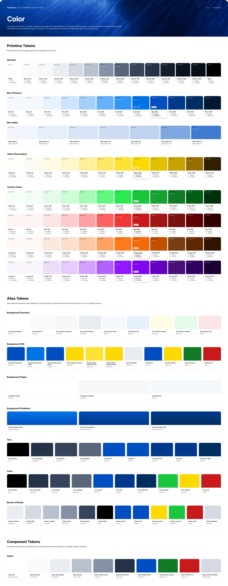

Wabash
2024-2025
ECOMMERCE
DESIGN
PROTOTYPES
DESIGN SYSTEM
FIGMA

Wabash is a world-class manufacturer of advanced engineered solutions and services for transportation and logistics. I was the sole designer for Wabash Parts Commerce, their new b2b ecommerce platform to allow distributors to purchase parts online, through both Wabash and dropship partners.
The platform features tens of thousands of parts, requiring care towards searchability and discoverability.